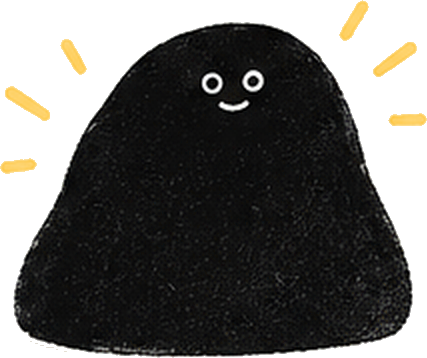

よりよい バランスで、 いい毎日を。


SNSごとに、非表示にする機能を細かく選択。見たいものは残して、気が散るループだけをオフにできます。
InstagramXYouTubeTikTok非表示にしても、友だちとのやり取りや検索、通常の投稿はいつも通り。大切なつながりはそのままです。
DM・ストーリーズ

検索・通常投稿

仕事中、勉強中、就寝前など。曜日・時間帯に合わせて自動でオンとオフ。意志の力に頼らず、続けられます。
 zzz
zzz
ねてる間は そっとブロック。
今週の節約時間
5時間24分
どれだけの時間をループから解放できたか、自動で記録。続けるほど、変化が見えてきます。


無限スクロールを防ぐための基本機能に、料金はかかりません。
SNSのIDやパスワードを、minuloが取得・保存することはありません。
minuloが変更するのは、minuloの中で開いたページだけです。Safariなどで開いたWebサイトを一括で制限することはありません。

スマートフォンだけでなく、Macでも同じようにSNSとの距離を整えられます。Safari・Chrome・Edge・Brave・Arc に対応しています。
